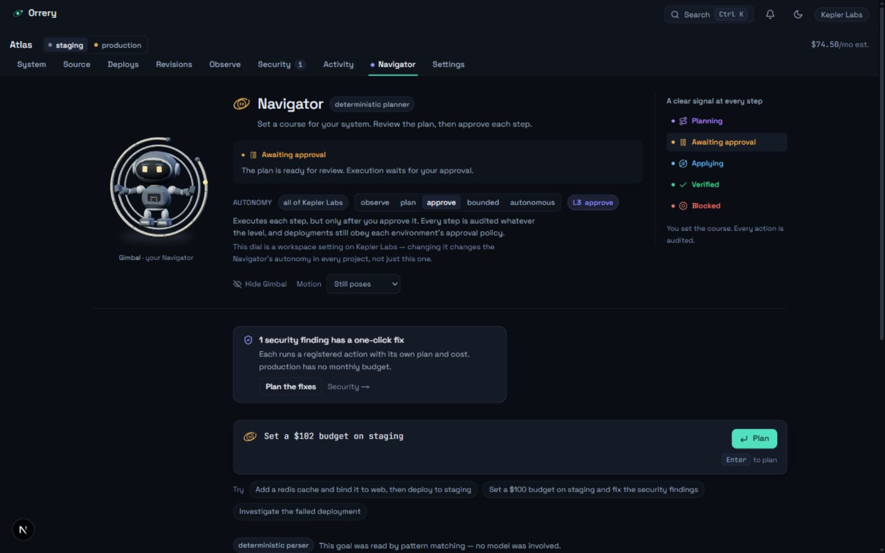
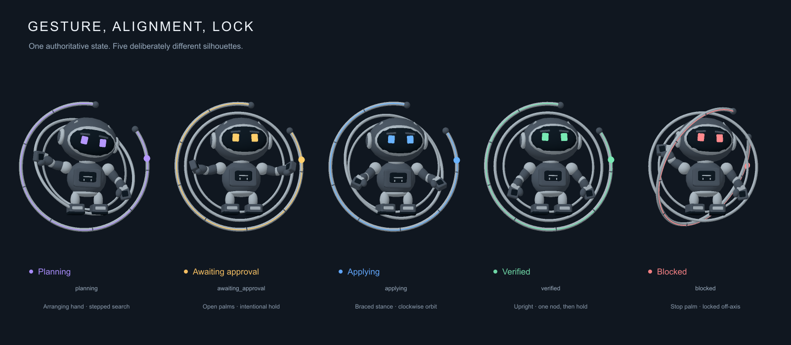
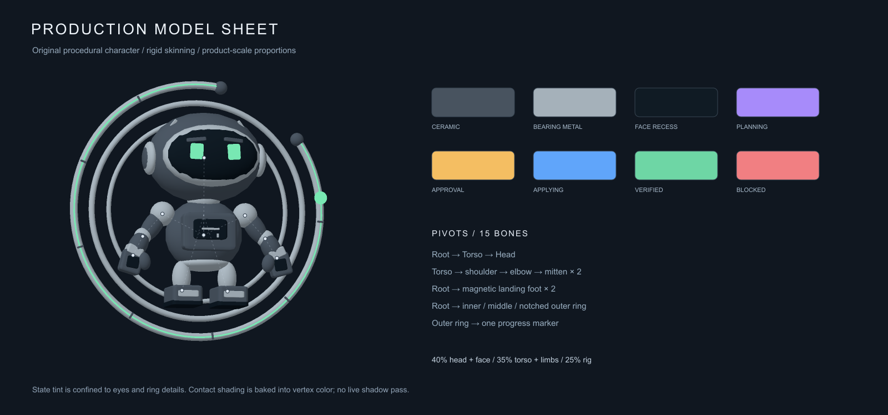
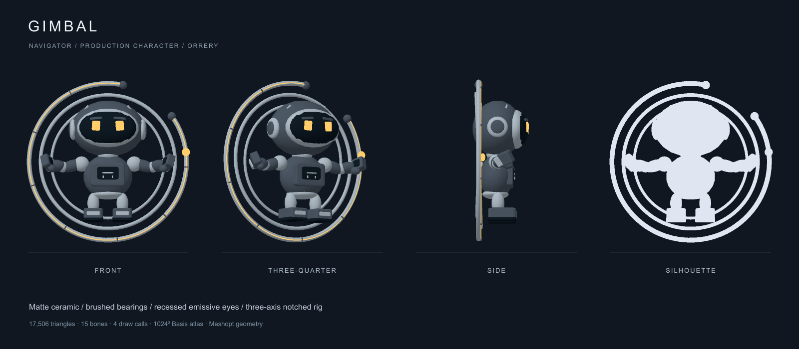

Gimbal
Navigator’s astro-mechanical flight engineer, published from Orrery’s production assets.

Five workflow states

Production model


Interactive WebGL preview: run Orrery locally. This static publication preserves the review renders and downloadable production assets.